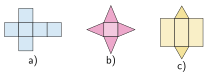
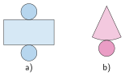

📝 Repaso de la unidad
Actividades de repaso
Escribe tu respuesta y después pulsa «Ver la solución» para corregirla tú. Los puntos dicen el nivel: ● básico, ●●● ampliación.
- Prisma triangular
- Pirámide hexagonal
- Octaedro
Solución
- \(C=5\), \(V=6\), \(A=9\)
- \(C=7\), \(V=7\), \(A=12\)
- \(C=8\), \(V=6\), \(A=12\)
¿Cómo te ha ido?
- Prisma pentagonal
- Pirámide cuadrangular
- Prisma octogonal
Solución
a) \(C = 7\), \(V = 10\), \(A = 15\). b) \(C = 5\), \(V = 5\), \(A = 8\). c) \(C = 10\), \(V = 16\), \(A = 24\).
¿Cómo te ha ido?
- Una caja de zapatos
- Una naranja
- Un dado de seis caras
- Una lata de conservas
- Una pirámide de Egipto
- Un cucurucho
Solución
a) Sí. b) No. c) Sí. d) No. e) Sí. f) No.
¿Cómo te ha ido?
- Tiene dos bases hexagonales iguales y caras laterales rectangulares.
- Tiene una base cuadrada y cuatro caras triangulares que se unen en un vértice.
- Tiene seis caras que son cuadrados iguales.
- Tiene ocho caras que son triángulos equiláteros iguales.
- Tiene cuatro caras que son triángulos equiláteros iguales.
Solución
a) Prisma hexagonal. b) Pirámide cuadrangular. c) Cubo. d) Octaedro. e) Tetraedro.
¿Cómo te ha ido?
- Prisma heptagonal
- Pirámide heptagonal
- Pirámide decagonal
Solución
a) \(C=9\), \(V=14\), \(A=21\). b) \(C=8\), \(V=8\), \(A=14\). c) \(C=11\), \(V=11\), \(A=20\).
¿Cómo te ha ido?
- ¿Cuántos poliedros regulares existen?
- ¿Cuáles tienen las caras triangulares?
- ¿Cuál tiene las caras pentagonales?
- ¿Cuántas caras tiene un icosaedro? ¿Y un dodecaedro?
Solución
a) Cinco. b) Tetraedro, octaedro e icosaedro. c) El dodecaedro. d) 20; 12.
¿Cómo te ha ido?
- Un prisma pentagonal
- Una pirámide hexagonal
- Un prisma decagonal
- Una pirámide triangular
Solución
a) 5. b) 6. c) 10. d) 3.
¿Cómo te ha ido?

Solución
a) Cubo. b) Pirámide cuadrangular. c) Prisma triangular.
¿Cómo te ha ido?
Algunos juegos de rol usan un dado con forma de icosaedro. ¿Cuántas caras tiene? ¿Cuántos vértices y aristas? Comprueba la fórmula de Euler.
Solución
20 caras, 12 vértices y 30 aristas: \(20+12=30+2\).
¿Cómo te ha ido?
- Una tienda de campaña canadiense.
- Una pirámide de Egipto.
- Un lápiz hexagonal sin afilar.
- Un tejado de una torre formado por ocho triángulos iguales.
Solución
a) Prisma; triángulo. b) Pirámide; cuadrado. c) Prisma; hexágono. d) Pirámide; octógono.
¿Cómo te ha ido?
Con palillos (aristas) y bolitas de plastilina (vértices) se construyen poliedros. ¿Cuántos palillos y cuántas bolitas hacen falta para un prisma pentagonal? ¿Y para un icosaedro?
Solución
Prisma pentagonal: 15 palillos y 10 bolitas. Icosaedro: 30 palillos y 12 bolitas.
¿Cómo te ha ido?
- ¿Puede existir un poliedro convexo con 6 caras, 6 vértices y 10 aristas? Si existe, di cuál.
- ¿Y uno con 5 caras, 5 vértices y 9 aristas?
Solución
a) Sí: una pirámide pentagonal. b) No.
¿Cómo te ha ido?
- 8 caras, 12 vértices y 18 aristas.
- 4 caras, 5 vértices y 6 aristas.
- 6 caras, 8 vértices y 12 aristas.
Solución
a) Sí: un prisma hexagonal. b) No. c) Sí: un cubo u otro prisma cuadrangular.
¿Cómo te ha ido?
- \(C=6\), \(V=8\), \(A=\,?\)
- \(C=12\), \(A=30\), \(V=\,?\)
- \(V=12\), \(A=30\), \(C=\,?\)
- \(C=9\), \(V=9\), \(A=\,?\)
Solución
a) \(A=12\). b) \(V=20\). c) \(C=20\). d) \(A=16\).
¿Cómo te ha ido?
Un prisma tiene 30 aristas. ¿Qué polígono tiene en la base? ¿Cuántas caras y cuántos vértices tiene?
Solución
Un decágono; 12 caras y 20 vértices.
¿Cómo te ha ido?
Una pirámide tiene 16 aristas. ¿Qué polígono tiene en la base? ¿Cuántas caras y cuántos vértices tiene?
Solución
Un octógono; 9 caras y 9 vértices.
¿Cómo te ha ido?
Marca V (verdadero) o F (falso). Después justifica tu respuesta.
Solución
a) Falso. b) Verdadero. c) Verdadero. d) Falso. e) Verdadero.
¿Cómo te ha ido?
Una pirámide regular tiene una base cuadrada de 16 cm de lado y una altura de 15 cm. ¿Cuánto mide su apotema?
Solución
17 cm.
¿Cómo te ha ido?
La apotema de una pirámide regular de base cuadrada mide 25 cm y el lado de la base, 14 cm. ¿Cuánto mide su altura?
Solución
24 cm.
¿Cómo te ha ido?
En cada vértice de un poliedro concurren al menos tres caras, y la suma de sus ángulos tiene que ser menor que \(360^\circ\).
- Cada ángulo de un hexágono regular mide \(120^\circ\). ¿Qué ocurre al juntar tres hexágonos en un vértice? ¿Existe un poliedro regular de caras hexagonales?
- Cada ángulo de un triángulo equilátero mide \(60^\circ\). ¿Cuántos triángulos pueden concurrir en un vértice? ¿Qué poliedros regulares se obtienen?
Solución
a) Suman \(360^\circ\) y quedan en un plano; no existe. b) 3, 4 o 5: tetraedro, octaedro e icosaedro.
¿Cómo te ha ido?
Un balón de fútbol clásico se cose con 12 pentágonos y 20 hexágonos. Si se piensa como un poliedro:
- ¿Cuántas caras tiene?
- Cada arista es común a dos caras. ¿Cuántas aristas tiene?
- Usa la fórmula de Euler para calcular el número de vértices.
Solución
a) 32. b) 90. c) 60.
¿Cómo te ha ido?
Una caja con forma de ortoedro mide \(12\times 4\times 3\) cm. ¿Cuánto mide la diagonal de la base? ¿Cabe dentro una varilla de 13 cm sin doblarla? (Pista: aplica dos veces el teorema de Pitágoras.)
Solución
\(\sqrt{160}\approx 12{,}65\) cm. Sí: la diagonal de la caja mide justo 13 cm.
¿Cómo te ha ido?
La base de un prisma y la de una pirámide son polígonos de \(n\) lados. Expresa en lenguaje algebraico el número de caras, vértices y aristas de cada uno y comprueba que cumplen la fórmula de Euler.
Solución
Prisma: \(C=n+2\), \(V=2n\), \(A=3n\). Pirámide: \(C=n+1\), \(V=n+1\), \(A=2n\). En ambos, \(C+V=A+2\).
¿Cómo te ha ido?
- Un rectángulo alrededor de uno de sus lados.
- Un triángulo rectángulo alrededor de uno de sus catetos.
- Un semicírculo alrededor de su diámetro.
Solución
a) Un cilindro. b) Un cono. c) Una esfera.
¿Cómo te ha ido?
- Una lata de refresco
- Un cucurucho
- Una canica
- Un dado
- Un rollo de cocina
- Un brik de leche
Solución
a) Cilindro. b) Cono. c) Esfera. d) No. e) Cilindro. f) No.
¿Cómo te ha ido?
Un rectángulo de 4 cm por 9 cm gira alrededor de su lado de 9 cm. ¿Qué cuerpo se obtiene? ¿Cuánto miden su radio y su altura? ¿Y si gira alrededor del lado de 4 cm?
Solución
Un cilindro de radio 4 cm y altura 9 cm. Al girar alrededor del otro lado: radio 9 cm y altura 4 cm.
¿Cómo te ha ido?
- Un cilindro de 2 cm de radio y 7 cm de altura.
- Un cono de 3 cm de radio y 4 cm de altura.
- Una esfera de 6 cm de diámetro.
Solución
a) Un rectángulo de \(2\times 7\) cm alrededor del lado de 7 cm. b) Un triángulo rectángulo de catetos 3 y 4 cm alrededor del de 4 cm. c) Un semicírculo de 3 cm de radio alrededor de su diámetro.
¿Cómo te ha ido?

Solución
a) Cilindro. b) Cono.
¿Cómo te ha ido?
- Dos bases circulares y ningún vértice.
- Una base circular y un vértice.
- Ninguna base y ningún vértice.
Solución
a) El cilindro. b) El cono. c) La esfera.
¿Cómo te ha ido?
Un triángulo rectángulo tiene catetos de 5 cm y 12 cm.
- Gira alrededor del cateto de 12 cm. ¿Qué radio, altura y generatriz tiene el cuerpo que se obtiene?
- ¿Y si gira alrededor del cateto de 5 cm?
Solución
a) Un cono de \(r=5\) cm, \(h=12\) cm y \(g=13\) cm. b) Un cono de \(r=12\) cm, \(h=5\) cm y \(g=13\) cm.
¿Cómo te ha ido?
- \(r=8\) cm, \(h=6\) cm
- \(r=9\) cm, \(h=12\) cm
- \(r=7\) cm, \(h=24\) cm
- \(r=2\) cm, \(h=5\) cm
Solución
a) 10 cm. b) 15 cm. c) 25 cm. d) \(\sqrt{29}\approx 5{,}39\) cm.
¿Cómo te ha ido?
- \(g=17\) cm, \(r=8\) cm, \(h=\,?\)
- \(g=26\) cm, \(r=10\) cm, \(h=\,?\)
- \(g=6\) cm, \(r=3\) cm, \(h=\,?\)
- \(g=41\) cm, \(h=40\) cm, \(r=\,?\)
Solución
a) 15 cm. b) 24 cm. c) \(\sqrt{27}\approx 5{,}20\) cm. d) 9 cm.
¿Cómo te ha ido?
Marca V (verdadero) o F (falso). Después justifica tu respuesta.
Solución
a) Falso. b) Verdadero. c) Verdadero. d) Falso. e) Falso.
¿Cómo te ha ido?
Dibuja el desarrollo plano de un cilindro de 5 cm de radio y 12 cm de altura. ¿Cuánto miden los lados del rectángulo?
Solución
\(10\pi\approx 31{,}42\) cm y 12 cm.
¿Cómo te ha ido?
Una hoja de \(30\times 20\) cm se enrolla, sin solaparla, uniendo sus lados de 20 cm, y forma la superficie lateral de un cilindro. ¿Qué altura y qué radio tiene el cilindro?
Solución
Altura 20 cm; radio \(\approx 4{,}77\) cm.
¿Cómo te ha ido?
Un cucurucho tiene forma de cono de 12 cm de generatriz y su boca mide 7 cm de diámetro. ¿Cuánto mide su altura?
Solución
\(\approx 11{,}48\) cm.
¿Cómo te ha ido?
Abre la vista 3D de GeoGebra.
- Escribe
c=Cono((0,0,0),(0,0,4),3). ¿Cuánto miden el radio y la altura del cono? - Calcula su generatriz con el teorema de Pitágoras y compruébalo con
Distancia((0,0,4),(3,0,0)).
📐 Ábrelo en GeoGebra Prueba la actividad moviendo los puntos y los deslizadores.
Solución
a) \(r=3\), \(h=4\). b) \(g=5\).
¿Cómo te ha ido?
Un cono tiene 5 cm de radio y 13 cm de generatriz. Pablo calcula su altura así: \(h=\sqrt{13^2+5^2}\approx 13{,}93\) cm. ¿Por qué no puede ser correcto? Calcula la altura.
Solución
La altura no puede ser mayor que la generatriz: hay que restar. \(h=12\) cm.
¿Cómo te ha ido?
Un cohete de juguete se obtiene al girar una figura formada por un rectángulo de \(2\times 10\) cm y, encima, un triángulo rectángulo de catetos 2 cm y 3 cm, alrededor de una recta que contiene el lado de 10 cm y el cateto de 3 cm. ¿Qué cuerpos forman el cohete? ¿Cuánto miden sus radios, sus alturas y la generatriz?
Solución
Un cilindro de \(r=2\) cm y \(h=10\) cm y un cono de \(r=2\) cm, \(h=3\) cm y \(g=\sqrt{13}\approx 3{,}61\) cm.
¿Cómo te ha ido?
Se corta una esfera de 10 cm de radio con un plano que pasa a 6 cm de su centro. ¿Qué figura plana se obtiene? ¿Cuánto mide su radio?
Solución
Un círculo de 8 cm de radio.
¿Cómo te ha ido?
Un triángulo rectángulo de catetos 6 cm y 8 cm gira alrededor de su hipotenusa. ¿Qué cuerpo se obtiene? ¿Cuánto mide el radio de la base común? (Pista: el área del triángulo se puede calcular con los catetos o con la hipotenusa y su altura.)
Solución
Dos conos unidos por la base; radio \(4{,}8\) cm.
¿Cómo te ha ido?
- Un cubo de 3 cm de arista.
- Un ortoedro de 5 cm, 4 cm y 2 cm.
- Un cilindro de 2 cm de radio y 6 cm de altura.
- Una esfera de 5 cm de radio.
- Un cono de 3 cm de radio y 5 cm de generatriz.
Solución
- 54 cm²
- 76 cm²
- \(32\pi\approx 100{,}53\) cm²
- \(100\pi\approx 314{,}16\) cm²
- \(24\pi\approx 75{,}40\) cm²
¿Cómo te ha ido?
Un ortoedro de 6 cm de largo, 4 cm de ancho y 2 cm de alto.
Solución
\(2(24 + 12 + 8) = 88\) cm\(^2\).
¿Cómo te ha ido?
- Un cubo de 8 cm de arista.
- Un ortoedro de \(10\times 6\times 4\) cm.
- Un ortoedro de \(2{,}5\times 2\times 1{,}2\) m.
Solución
a) 384 cm\(^2\). b) 248 cm\(^2\). c) \(20{,}8\) m\(^2\).
¿Cómo te ha ido?
- Un prisma de base cuadrada de 4 cm de lado y 9 cm de altura.
- Un prisma de 10 cm de altura cuya base es un triángulo equilátero de 6 cm de lado y \(5{,}2\) cm de altura.
Solución
a) 144 cm\(^2\); 176 cm\(^2\). b) 180 cm\(^2\); \(211{,}2\) cm\(^2\).
¿Cómo te ha ido?
Calcula el área lateral y el área total de una pirámide regular de base cuadrada de 8 cm de lado y 10 cm de apotema.
Solución
160 cm\(^2\); 224 cm\(^2\).
¿Cómo te ha ido?
- Radio 4 cm y altura 10 cm.
- Radio \(1{,}5\) m y altura 2 m.
Solución
a) \(112\pi\approx 351{,}86\) cm\(^2\). b) \(10{,}5\pi\approx 32{,}99\) m\(^2\).
¿Cómo te ha ido?
- Radio 7 cm y generatriz 10 cm.
- Radio 4 cm y generatriz 7 cm.
Solución
a) \(119\pi\approx 373{,}85\) cm\(^2\). b) \(44\pi\approx 138{,}23\) cm\(^2\).
¿Cómo te ha ido?
- Radio 4 cm
- Diámetro 30 cm
- Radio \(0{,}5\) m
Solución
a) \(64\pi\approx 201{,}06\) cm\(^2\). b) \(900\pi\approx 2\,827{,}43\) cm\(^2\). c) \(\pi\approx 3{,}14\) m\(^2\).
¿Cómo te ha ido?
Para calcular el área lateral de un cilindro de 3 cm de radio y 5 cm de altura, Nerea hace \(\pi\cdot 3^2\cdot 5=45\pi\) cm². ¿Qué ha calculado en realidad? Calcula el área lateral.
Solución
El volumen. Área lateral: \(30\pi\approx 94{,}25\) cm².
¿Cómo te ha ido?
Un prisma hexagonal regular tiene 4 cm de lado de la base y 10 cm de altura. La apotema de la base mide \(3{,}46\) cm. Calcula su área lateral y su área total.
Solución
240 cm\(^2\); \(323{,}04\) cm\(^2\).
¿Cómo te ha ido?
Una pirámide regular tiene una base cuadrada de 12 cm de lado y una altura de 8 cm. Calcula su apotema y su área total.
Solución
Apotema 10 cm; 384 cm\(^2\).
¿Cómo te ha ido?
Una pirámide hexagonal regular tiene 6 cm de lado de la base, \(5{,}2\) cm de apotema de la base y 9 cm de apotema de la pirámide. Calcula su área total.
Solución
\(162+93{,}6=255{,}6\) cm\(^2\).
¿Cómo te ha ido?
Un cono tiene 8 cm de radio y 15 cm de altura. Calcula su generatriz y su área total.
Solución
\(g=17\) cm; \(200\pi\approx 628{,}32\) cm\(^2\).
¿Cómo te ha ido?
Se quiere envolver un regalo con forma de cubo de 25 cm de arista. ¿Cuánto papel hace falta si se añade un 10 % más para las solapas?
Solución
4 125 cm\(^2\).
¿Cómo te ha ido?
Una habitación mide 5 m de largo, 4 m de ancho y \(2{,}5\) m de alto. Se van a pintar las paredes y el techo, pero no la puerta (\(2\) m\(^2\)) ni la ventana (\(1{,}5\) m\(^2\)).
- ¿Cuántos m\(^2\) hay que pintar?
- Si un litro de pintura cubre 10 m\(^2\), ¿cuántos litros hacen falta?
Solución
a) \(61{,}5\) m\(^2\). b) \(6{,}15\) L.
¿Cómo te ha ido?
Una lata de conservas cilíndrica tiene 4 cm de radio y 11 cm de altura. ¿Cuánto papel tiene su etiqueta si cubre toda la superficie lateral?
Solución
\(88\pi\approx 276{,}46\) cm\(^2\).
¿Cómo te ha ido?
El tejado de una torre tiene forma de cono de 3 m de radio y 4 m de altura. ¿Cuántos m\(^2\) de teja hay que poner? Si cada m\(^2\) cuesta 30 €, ¿cuánto cuesta cubrirlo?
Solución
\(15\pi\approx 47{,}12\) m\(^2\); unos \(1\,413{,}72\) €.
¿Cómo te ha ido?
Una tienda de campaña tiene forma de pirámide regular de base cuadrada de 2 m de lado. La apotema de la pirámide mide \(1{,}5\) m. ¿Cuánta tela hace falta, incluido el suelo?
Solución
10 m\(^2\).
¿Cómo te ha ido?
El área total de un cubo es 294 cm\(^2\). ¿Cuánto mide su arista?
Solución
7 cm.
¿Cómo te ha ido?
Para calcular el área total de un cono de 5 cm de radio y 12 cm de altura, Iker hace \(\pi\cdot 5\cdot 12+\pi\cdot 5^2=85\pi\) cm\(^2\). ¿Qué error ha cometido? Calcula el área correcta.
Solución
Ha usado la altura en lugar de la generatriz (\(g=13\) cm). \(A_T=90\pi\approx 282{,}74\) cm\(^2\).
¿Cómo te ha ido?
El radio de la Tierra mide unos 6 370 km y el de la Luna, unos 1 737 km. ¿Cuántas veces mayor es la superficie de la Tierra que la de la Luna?
Solución
Unas \(13{,}4\) veces.
¿Cómo te ha ido?
Un silo es un cilindro de 3 m de radio y 10 m de altura con un tejado cónico de 4 m de altura. ¿Cuánta chapa hace falta para la pared y el tejado?
Solución
\(60\pi+15\pi=75\pi\approx 235{,}62\) m\(^2\).
¿Cómo te ha ido?
Una pieza de madera está formada por un cubo de 4 cm de arista y, encima, una pirámide regular cuya base es la cara superior del cubo y cuya apotema mide 3 cm. ¿Cuál es el área de la superficie exterior de la pieza?
Solución
\(80+24=104\) cm\(^2\).
¿Cómo te ha ido?
Una esfera de radio \(r\) encaja justa en un cilindro de radio \(r\) y altura \(2r\). Calcula el área de la esfera y el área lateral del cilindro para \(r=1\), \(r=2\) y \(r=5\) cm. ¿Qué observas? ¿Puedes explicarlo con las fórmulas?
Solución
Son iguales (\(12{,}57\); \(50{,}27\) y \(314{,}16\) cm\(^2\)): \(4\pi r^2=2\pi r\cdot 2r\).
¿Cómo te ha ido?
- 3,5 m\(^3\) en dm\(^3\)
- 2500 cm\(^3\) en L
- 0,75 L en cm\(^3\)
- 12 000 L en m\(^3\)
Solución
a) 3500 dm\(^3\) b) 2,5 L c) 750 cm\(^3\) d) 12 m\(^3\)
¿Cómo te ha ido?
- \(2\) m³
- \(350\) cm³
- \(4{,}5\) dm³
- \(0{,}08\) m³
Solución
a) \(2\,000\) L b) \(0{,}35\) L c) \(4{,}5\) L d) \(80\) L
¿Cómo te ha ido?
- \(2{,}5\) m\(^3\) en dm\(^3\)
- 750 cm\(^3\) en litros
- 3 hl en litros
- \(0{,}04\) m\(^3\) en litros
Solución
a) 2 500 dm\(^3\) b) \(0{,}75\) L c) 300 L d) 40 L
¿Cómo te ha ido?
- \(4{,}2\) m\(^3\) en litros
- 1 800 mL en dm\(^3\)
- \(0{,}5\) dm\(^3\) en cm\(^3\)
- 25 000 cm\(^3\) en m\(^3\)
Solución
a) 4 200 L. b) \(1{,}8\) dm\(^3\). c) 500 cm\(^3\). d) \(0{,}025\) m\(^3\).
¿Cómo te ha ido?
- Un cubo de 5 cm de arista.
- Un ortoedro de \(8\times 5\times 3\) cm.
Solución
- 150 cm\(^2\); 125 cm\(^3\)
- 158 cm\(^2\); 120 cm\(^3\)
¿Cómo te ha ido?
Calcula el área total y el volumen de un cilindro de 5 cm de radio y 8 cm de altura.
Solución
\(\approx 408{,}41\) cm\(^2\); \(\approx 628{,}32\) cm\(^3\).
¿Cómo te ha ido?
Calcula el área y el volumen de un balón de 10 cm de diámetro.
Solución
\(\approx 314{,}16\) cm\(^2\); \(\approx 523{,}60\) cm\(^3\).
¿Cómo te ha ido?
- Un cubo de 6 cm de arista.
- Un ortoedro de 10 cm, 4 cm y 2,5 cm.
- Un cilindro de 3 cm de radio y 10 cm de altura.
- Un cono de 6 cm de radio y 5 cm de altura.
- Una esfera de 6 cm de radio.
Solución
- \(216\) cm³
- \(100\) cm³
- \(90\pi\approx 282{,}74\) cm³
- \(60\pi\approx 188{,}50\) cm³
- \(288\pi\approx 904{,}78\) cm³
¿Cómo te ha ido?
- Un cubo de 7 cm de arista.
- Un ortoedro de \(5 \times 4 \times 3\) cm.
- Un cilindro de 2 cm de radio y 10 cm de altura.
- Una esfera de 3 cm de radio.
Solución
a) 343 cm\(^3\) b) 60 cm\(^3\) c) \(40\pi \approx 125{,}66\) cm\(^3\) d) \(36\pi \approx 113{,}1\) cm\(^3\)
¿Cómo te ha ido?
Marca V (verdadero) o F (falso). Después justifica tu respuesta.
No se corrige solo: compruébalo con tu profesor o profesora.
Solución
- Falso.
- Verdadero.
- Falso.
- Verdadero.
¿Cómo te ha ido?
Un prisma tiene como base un triángulo rectángulo de catetos 3 y 4 cm, y su altura es 10 cm. Calcula su área total y su volumen.
Solución
132 cm\(^2\); 60 cm\(^3\).
¿Cómo te ha ido?
Una pirámide regular tiene una base cuadrada de 10 cm de lado y una altura de 12 cm. Calcula su apotema, su área total y su volumen.
Solución
Apotema 13 cm; 360 cm\(^2\); 400 cm\(^3\).
¿Cómo te ha ido?
Un cono tiene una generatriz de 10 cm y un radio de 6 cm. Calcula su altura, su área total y su volumen.
Solución
\(h=8\) cm; \(96\pi\approx 301{,}59\) cm\(^2\); \(96\pi\approx 301{,}59\) cm\(^3\).
¿Cómo te ha ido?
Una tienda de campaña tiene forma de prisma triangular. Cada entrada es un triángulo isósceles de 2 m de base y \(1{,}5\) m de altura, y la tienda mide 3 m de largo.
- ¿Qué volumen tiene?
- ¿Cuánta tela hace falta, incluido el suelo?
Solución
a) \(4{,}5\) m\(^3\) b) \(19{,}8\) m\(^2\)
¿Cómo te ha ido?
Un depósito de agua cilíndrico mide 2 m de diámetro y 3 m de altura. ¿Cuántos litros de agua caben?
Solución
\(3\pi\approx 9{,}42\) m\(^3\approx 9425\) L.
¿Cómo te ha ido?
Un acuario con forma de ortoedro mide 80 cm de largo, 40 cm de ancho y 50 cm de alto. Si se llena hasta 5 cm del borde, ¿cuántos litros de agua tiene?
Solución
144 L.
¿Cómo te ha ido?
Una piscina mide 10 m de largo, 5 m de ancho y 1,6 m de profundidad. ¿Cuántos litros caben? ¿Cuánto tarda en llenarse con un grifo que echa 200 L por minuto?
Solución
80 m³ \(=80\,000\) L. Tarda 400 min, es decir, 6 h 40 min.
¿Cómo te ha ido?
Una piscina mide 8 m de largo, 4 m de ancho y \(1{,}5\) m de profundidad.
- ¿Cuántos litros de agua caben?
- Si el agua cuesta 2 € el m\(^3\), ¿cuánto cuesta llenarla?
- ¿Cuántas horas tarda en llenarse con una manguera que echa 20 litros por minuto?
Solución
a) 48 m\(^3\) \(= 48\,000\) L. b) 96 €. c) 40 horas.
¿Cómo te ha ido?
Una lata de refresco es un cilindro de \(3{,}3\) cm de radio y \(11{,}5\) cm de altura.
- ¿Cuántos centilitros caben?
- ¿Cuánto aluminio hace falta para fabricarla?
Solución
a) Unos 39 cl. b) \(306{,}9\) cm\(^2\)
¿Cómo te ha ido?
Un montón de arena tiene forma de cono de 2 m de radio y \(1{,}5\) m de altura. ¿Cuántos m\(^3\) de arena hay? ¿Cuántos viajes tiene que hacer un camión que carga 3 m\(^3\)?
Solución
\(6{,}28\) m\(^3\); 3 viajes.
¿Cómo te ha ido?
La Gran Pirámide de Guiza tiene una base cuadrada de unos 230 m de lado y una altura de 146 m. Calcula su volumen y exprésalo en notación científica.
Solución
\(2{,}57 \cdot 10^6\) m\(^3\)
¿Cómo te ha ido?
La Tierra es aproximadamente una esfera de 6 370 km de radio, y el 71% de su superficie está cubierta de agua. ¿Cuántos km\(^2\) de agua hay? Expresa el resultado en notación científica.
Solución
\(3{,}6 \cdot 10^8\) km\(^2\)
¿Cómo te ha ido?
Un balón de baloncesto tiene 24 cm de diámetro. Usa la tecla \(\pi\) de la calculadora para hallar:
- La superficie de cuero que lo recubre.
- El aire que cabe dentro, en litros.
Solución
a) \(1\,809{,}6\) cm\(^2\) b) \(7{,}24\) L
¿Cómo te ha ido?
Abre la vista 3D de GeoGebra.
- Escribe
a=Cubo((0,0,0),(2,0,0))yVolumen(a). ¿Qué obtienes? - Escribe
Desarrollo(a). ¿Cuántas caras tiene el desarrollo plano y qué forma tienen? - Escribe
b=Esfera((0,0,0),3)yVolumen(b). Compruébalo con la fórmula.
📐 Ábrelo en GeoGebra Prueba la actividad moviendo los puntos y los deslizadores.
Solución
a) 8. b) Seis cuadrados. c) \(36\pi \approx 113{,}1\)
¿Cómo te ha ido?
Lee el texto y contesta.
Los briks de leche de un litro tienen forma de ortoedro y miden aproximadamente \(9{,}5\) cm de largo, \(6{,}4\) cm de ancho y \(16{,}5\) cm de alto. Están hechos de cartón, plástico y aluminio. Los fabricantes buscan usar el menor material posible, pero también que el envase sea cómodo de agarrar, se pueda apilar sin dejar huecos y quepa en la puerta de la nevera.
- Comprueba que en el brik cabe aproximadamente un litro.
- ¿Cuánto material hace falta para fabricarlo, sin contar solapas?
- Un cubo de 10 cm de arista también contiene un litro. ¿Cuánto material necesitaría?
- ¿Por qué crees que los briks no tienen forma de cubo?
Solución
a) 1 003 cm\(^3\) b) \(646{,}3\) cm\(^2\) c) 600 cm\(^2\) d) Respuesta abierta.
¿Cómo te ha ido?
Una lata cilíndrica tiene que contener 330 cm³. En una hoja de cálculo escribe en la columna A los radios 2; 2,5; 3; 3,5; 4 y 4,5 cm. En la B calcula la altura con =330/(PI()*A2^2) y en la C el área total con =2*PI()*A2^2+2*PI()*A2*B2. ¿Con qué radio se gasta menos material?
Solución
El área mínima está entre 3,5 y 4 cm de radio.
¿Cómo te ha ido?
Una caja de sobaos con forma de ortoedro mide 30 cm de largo, 20 cm de ancho y 8 cm de alto. Cada sobao ocupa un ortoedro de \(10\times 5\times 4\) cm.
- ¿Cuánto cartón hace falta para la caja, sin contar las solapas?
- ¿Cuántos sobaos caben si se colocan sin dejar huecos?
- ¿Cuál es la capacidad de la caja en litros?
Solución
a) 2 000 cm\(^2\). b) 24. c) \(4{,}8\) L.
¿Cómo te ha ido?
Un cucurucho de helado tiene forma de cono de 3 cm de radio y 10 cm de altura, y encima lleva una semiesfera de helado del mismo radio. ¿Qué volumen total de helado cabe?
Solución
\(30\pi+18\pi=48\pi\approx 150{,}80\) cm\(^3\).
¿Cómo te ha ido?
Se quiere fabricar una caja cúbica sin tapa con 500 cm\(^2\) de cartón. ¿Cuánto medirá la arista? ¿Qué volumen tendrá?
Solución
Arista 10 cm; 1000 cm\(^3\).
¿Cómo te ha ido?
Una pelota de 12 cm de diámetro se guarda en una caja cúbica de 12 cm de arista. ¿Qué porcentaje del volumen de la caja ocupa la pelota?
Solución
Un 52,4 %.
¿Cómo te ha ido?
Un cucurucho de helado tiene forma de cono de 2,5 cm de radio y 10 cm de generatriz. ¿Cuál es su altura? ¿Cuántos cm³ de helado caben dentro?
Solución
\(h \approx 9{,}68\) cm; \(63{,}4\) cm³.
¿Cómo te ha ido?
Tres pelotas de tenis de \(6{,}5\) cm de diámetro se venden en un bote cilíndrico en el que encajan justas.
- ¿Qué radio y qué altura tiene el bote?
- ¿Qué porcentaje del bote ocupan las pelotas?
Solución
a) Radio \(3{,}25\) cm y altura \(19{,}5\) cm. b) Un 66,7%.
¿Cómo te ha ido?
Un vaso cilíndrico de 4 cm de radio tiene agua hasta 10 cm de altura. Se echan 5 canicas de 1 cm de radio. ¿Cuánto sube el agua?
Solución
\(0{,}42\) cm
¿Cómo te ha ido?
Si se duplica la arista de un cubo, ¿por cuánto se multiplica su área total? ¿Y su volumen? ¿Ocurre lo mismo al duplicar el radio de una esfera?
Solución
Área, por 4; volumen, por 8. Sí.
¿Cómo te ha ido?
Lee el texto y contesta.
El rey Hierón de Siracusa encargó una corona de oro puro y sospechaba que el orfebre había mezclado plata. Pidió a Arquímedes que lo averiguara sin estropear la corona. Cuenta la leyenda que, al meterse en la bañera, Arquímedes vio cómo subía el agua y salió gritando «¡Eureka!»: podía medir el volumen de la corona sumergiéndola en agua. Supón que la corona pesaba 1 000 g y desplazó 64 cm\(^3\) de agua. Un centímetro cúbico de oro pesa \(19{,}3\) g y uno de plata, \(10{,}5\) g.
- ¿Qué volumen ocuparían 1 000 g de oro puro? ¿Y 1 000 g de plata pura?
- ¿Era la corona de oro puro? Explica cómo lo sabes.
- ¿Por qué sirve sumergir la corona en agua para medir su volumen?
Solución
a) \(51{,}8\) cm\(^3\) y \(95{,}2\) cm\(^3\). b) No. c) Porque desplaza un volumen de agua igual al suyo.
¿Cómo te ha ido?
🧩 Paso a paso
Así se resuelven los ejercicios tipo de la unidad. Cada bloque es una orden, como en Scratch: los bloques se leen de arriba abajo y los que tienen forma de C se repiten o solo se hacen si se cumple la condición.